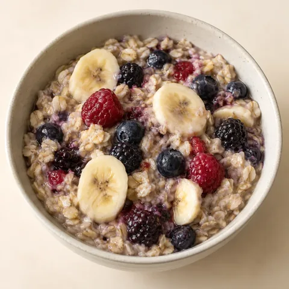
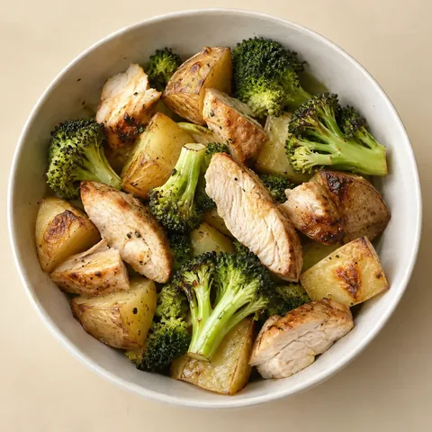
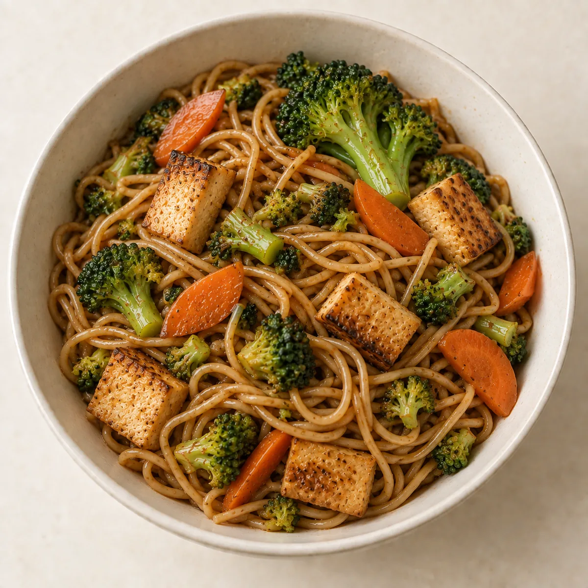
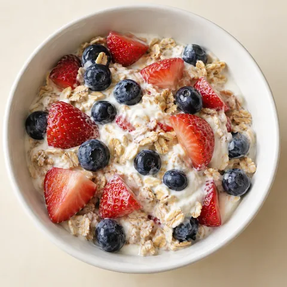
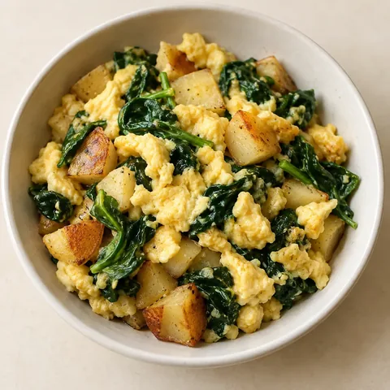
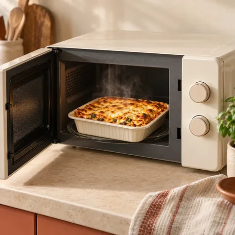
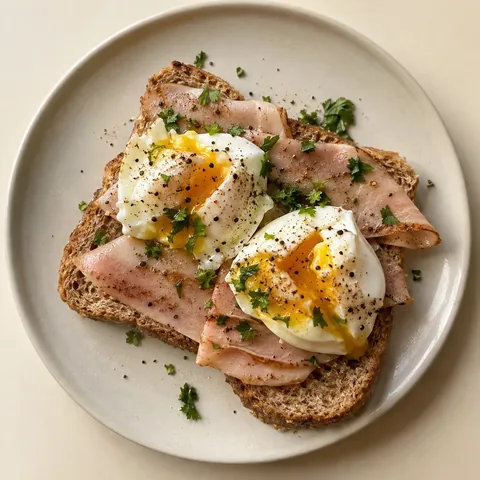

Erkennen, was Kunden nächste Woche einkaufen möchten.
SmartBasket übersetzt geplante Mahlzeiten in Einkaufsbedarfe. Gemeinsam mit Händlern wollen wir testen, ob diese Signale die Sortimentsplanung unterstützen.
Bedarf · KW 44
Einzugsgebiet 60311 · Pilotansicht
Geplante Packungen je TagMo – So
- 1Tomaten84
- 2Nudeln62
- 3Milch58
- 4Haferflocken41
Spitze am FreitagFrische früher disponieren
Ohne Namennur aggregierte Werte
Von der Wochenplanung zum Bedarfssignal.
Phase 1 · Planung anonym
-
1Familie plant
Gerichte und wer mitisst – im Wochenplan der App.
-
2Bedarf entsteht
Mengen werden in ganze Packungen umgerechnet.
-
3Abgleich mit Ihrem Sortiment
Per schlankem Export oder Schnittstelle.
-
4Sie sehen Bedarf
Im Einzugsgebiet, aggregiert und ohne Namen.
Darstellungen illustrativ · Werte fiktiv
Ab hier nur mit Einwilligung · Perspektive
- 5
Kunde entscheidet
Bestellen & Adresse freigeben
Ohne diesen Schalter bleibt alles anonym.
- 6
Bestellung
#1042 · 23 ArtikelAbholung oder Lieferung
Ihr System
Geht in Ihre Warenwirtschaft oder Ihren Shop – Sie kommissionieren, übergeben oder liefern wie gewohnt.
Zukünftige Erweiterung
Fragen zum Ablauf? Pilotgespräch anfragen →
Personas: vom Haushalt zum Warenkorb.
Wählen Sie einen Haushaltstyp und sehen Sie, wie seine Woche aussieht – und welche Packungen daraus entstehen.
Beispielhafte Personas für den Pilot · Anteile und Mengen fiktiv
SO PLANT DIE FAMILIE
- Mo
- Di
- Mi
- Do
- Fr
- Sa
- So
Geplant meist Sonntagabend · 3 Mahlzeiten an Werktagen
TYPISCHER PLAN



Kinder bekommen kleinere Portionen, Reste vom Abend werden mittags aufgewärmt.
BEDARF PRO HAUSHALT & WOCHE
- Nudeln 500 g2 Pck.
- Tomaten3 Pck.
- Milch 1 l4 Pck.
- Haferflocken1 Pck.
- Hähnchenbrust1 Pck.
Für Ihr Sortiment: Familienpackungen und Basis-Frische, Bedarf vor allem montags.
SO PLANT DAS PAAR
- Mo
- Di
- Mi
- Do
- Fr
- Sa
- So
Geplant unter der Woche · vor allem Abendessen
TYPISCHER PLAN



Mittags essen beide oft auswärts, abends wird frisch gekocht – am Wochenende auch aufwendiger.
BEDARF PRO HAUSHALT & WOCHE
- Lachs2 Pck.
- Brokkoli3 Pck.
- Reis 1 kg1 Pck.
- Beeren 250 g2 Pck.
- Joghurt 500 g2 Pck.
Für Ihr Sortiment: Frische und mittlere Packungen, Nachfrage verteilt über die Woche.
SO PLANT DER SINGLE
- Mo
- Di
- Mi
- Do
- Fr
- Sa
- So
Geplant kurz vor dem Einkauf · einfache Gerichte
TYPISCHER PLAN



Gekocht wird gern doppelt – die zweite Portion gibt es am nächsten Tag.
BEDARF PRO HAUSHALT & WOCHE
- Eier 10 Stk.1 Pck.
- Toastbrot1 Pck.
- Fertiggerichte3 Pck.
- Spinat1 Pck.
- Äpfel1 Pck.
Für Ihr Sortiment: Kleine Packungen und Convenience, weniger Reste.
Welche Potenziale wir gemeinsam testen.
Schwundpotenzial untersuchen
Prüfen, ob frühzeitige Bedarfssignale die Frische-Disposition unterstützen.
Warenverfügbarkeit verbessern
Potenzielle Fehlmengen bei nachgefragten Artikeln früher erkennen.
Nachfrage im Einzugsgebiet analysieren
Geplante Warenkörbe nach Warengruppen auswerten – sofern genügend Daten vorliegen.
- Supermärkte
- Regionale Händler
- Bio-Anbieter
- Hofläden
- Lieferdienste
Aggregierte Signale. Klare Grenzen.
Geplante Warenkörbe sind Kaufabsichten, keine bestätigten Verkäufe. Aussagekraft und regionale Abdeckung hängen von der Zahl teilnehmender Nutzender ab. Für Händler sind aggregierte Auswertungen vorgesehen, keine Einzelprofile.
- Aggregierte Auswertung geplant
- Keine Einzelprofile für Händler
- Bestelldaten nur mit Einwilligung
Schritt für Schritt zum Handelspilot.
- Heute
Planung für Familien
Wochenplan, Mengen, Einkaufsliste
läuft in der Testversion - Mit den ersten Partnern
Sortiment und Bedarf
Sortimentsabgleich und aggregierte Pilot-Auswertung
als Nächstes - Perspektivisch
Weitere Funktionen
Bestellungen und vertiefte Auswertungen, vorbehaltlich Prüfung und Einwilligung
danach
Gemeinsam einen Handelspilot gestalten.
Für den ersten Sortimentsabgleich reichen als Ausgangspunkt Artikelname, Packungsgröße und Preis – beispielsweise als CSV- oder Excel-Datei. Im Gespräch klären wir Umfang, Zeitrahmen und mögliche Auswertungen.
Im Pilot können wir prüfen, wie viele geplante Artikel dem Sortiment zugeordnet werden und ob die Signale mit tatsächlichen Abverkäufen übereinstimmen. Konkrete Erfolgskriterien vereinbaren wir gemeinsam.
20 Minuten Erstgespräch – unverbindlich und direkt mit Samaana Zakharova.
samzakharo@gmail.com · Projekt auf GitHub · Datenschutz · Impressum